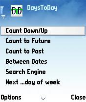
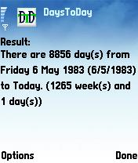

DaysToDay 2.2 (FREE!)
Plan man-days for future events, count days or search dates in seconds. New! Spanish Version by Dr. Gilberto González!
 
Download to PC:
Please help donate for this free software! Please click here
Download English Version Download Spanish Version
Download Source Code (BSD License) (Please note that the source code was written when I was just starting to learn programming - it might be low-standard in quality and/or convention.)
Features:
- 10 Function Professional Calendar Counting!
- 10 Function Professional calendar counting!
- Works on almost ALL java-enabled mobile phones/PDAs.
- New in this version: Calendar count results are shown in a new and easy-to-read page. Download directly to phone: Open your phone’s WAP browser and type/goto wap.ClearEvo.com then choose and download, the installation would start automatically over the air.
Special Thanks
- Special thanks to Mathias Gundlach for his great ideas, suggestions and the very nice program icon he made for DaysToDay.
- Special thanks to Dr. Gilberto González for his ideas, very detailed testing and lots of translation for the Spanish version.
blog comments powered by Disqus